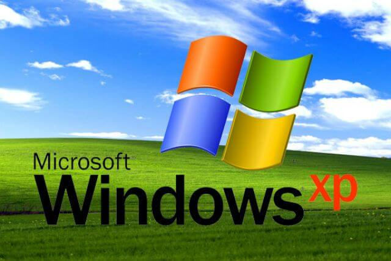

Windows 1.0
La primera versión de Windows fue lanzada el 20 de noviembre de 1985 bajo el nombre de Windows 1.0 fue llamada así debido al uso de ventanas gráficas en las que se podía tanto administrar información como modificarla de una forma mucho más gráfica que en el sistema MS-DOS, en el que al no tener interfaz gráfica todo se administraba desde la consola de comandos. Aunque suponía una mejora respecto a MS-DOS no tuvo demasiado impacto en la época, entre otras cosas porque no era un sistema operativo en si mismo, sino una aplicación que se ejecutaba desde el propio MS-DOS.
.jpg)
Windows 95
Después de muchas versiones y mejoras, llegó el 24 de agosto de 1995 el conocido Windows 95, esta versión cambió muchas cosas
respecto a sus antecesores, como grandes mejoras en la interfaz gráfica y soporte para la función plug and play entre otras.
Fue un éxito en ventas y supuso un antes y después en los sistemas operativos de Windows.

Windows XP
Windows XP buscó ser una versión tanto domestica como fue Windows 95 como corporativa como fue Windows 2000, fue lanzado el 25 de octubre de 2001 y tuvo la cuota de mercado más alta del momento hasta el año 2012, donde fue superada por Windows 7.
Windows 7
Salido al mercado en 2009, se tomó como una actualización de Windows Vista, sus principales objetivos fueron hacerlo más ligero y rápido así como mejorar la interfaz para hacerla aún más accesible, también añadieron soporte para discos duros virtuales y mejoraron el rendimiento con procesadores multinúcleo.

Windows 10
Finalmente, el 29 de julio de 2015 fue lanzado Windows 10, el sistema operativo que trataremos en este trabajo, desde sus funciones, requisitos, modos de inicio o particiones.